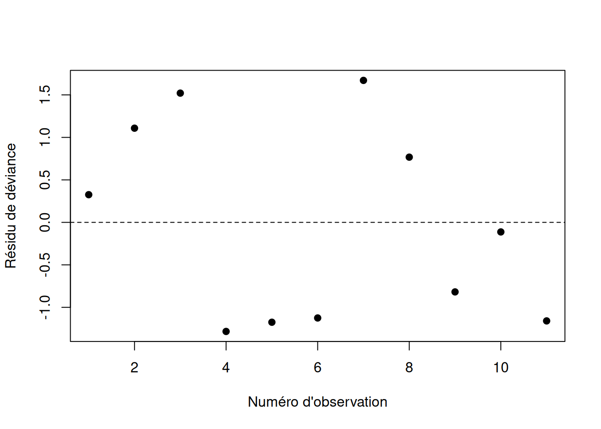

2 Modèles de régression pour données binaires
Les modèles de régression linéaire ne permettent de considérer que les cas où la variable réponse \(Y_i\) est normale. Cependant, dans plusieurs situations, on a une variable réponse discrète qui ne peut prendre qu’un nombre fini (ou dénombrable) de valeurs possibles. Dans ce chapitre, on s’intéresse au cas où \(Y_i\) suit une loi de Bernoulli ou une loi binomiale.
Exemple
Quatre exemples tirés de la librairie GLMsData de R :
quilpie: observations de 1921 à 1988 de la quantité de pluie mesurée en juillet à Quilpie (Australie). La réponse vaut 1 si la quantité de pluie dépasse 10 mm et 0 sinon ; les variables explicatives concernent la pression atmosphérique (SOI).nminer: 31 observations ; la réponse vaut 1 si un mineur bruyant (oiseau) est détecté dans la parcelle et 0 sinon.deposit: 18 observations ; la réponse \(Y_i\) est le nombre d’insectes tués parmi les \(m_i\) insectes exposés, avec deux variables explicatives (type d’insecticide \(A\), \(B\) ou \(C\), et dose).turbines: 11 observations ; la réponse \(Y_i\) est le nombre de machines présentant des fissures parmi \(m_i\) machines, en fonction du nombre d’heures de fonctionnement.
2.1 Données et modèle
2.1.1 Données individuelles (Bernoulli)
Dans les deux premiers exemples, la variable réponse \(Y_i \in \{0,1\}\). Les données sont sous la forme \(\{(Y_i,\boldsymbol{X}_i),\, i=1,\ldots,n\}\). On dit que \(Y_i\) suit une loi de Bernoulli de paramètre \(\pi_i \in [0,1]\) :
\[ \begin{aligned} P(Y_i = y_i) &= \pi_i^{y_i}(1-\pi_i)^{1-y_i}, \quad y_i \in \{0,1\},\\ E[Y_i] &= \mu_i = \pi_i,\\ Var[Y_i] &= \pi_i(1-\pi_i). \end{aligned} \]
On pose \(\eta_i = \beta_0 + \beta_1 X_{i1} + \cdots + \beta_p X_{ip}\) (le prédicteur linéaire) et on relie \(\pi_i\) à \(\eta_i\) par une fonction de lien \(g\) supposée connue : \(\eta_i=g(\pi_i)\), c’est-à-dire \[\pi_i = P(Y_i = 1) = g^{-1}(\beta_0 + \beta_1 X_{i1} + \cdots + \beta_p X_{ip}).\]
2.1.2 Données groupées (binomiale)
Dans les deux derniers exemples, \(Y_i \in \{0,1,\ldots,m_i\}\), où \(m_i\) est un entier connu représentant le nombre total d’expériences indépendantes ; \(Y_i\) est le nombre de succès. On écrit \(Y_i \sim \mathrm{Bin}(m_i,\pi_i)\) :
\[ \begin{aligned} P(Y_i = y_i) &= \binom{m_i}{y_i}\pi_i^{y_i}(1-\pi_i)^{m_i - y_i}, \quad y_i \in \{0,1,\ldots,m_i\},\\ E[Y_i] &= \mu_i = m_i\pi_i,\\ Var[Y_i] &= m_i\pi_i(1-\pi_i) = \frac{\mu_i(m_i - \mu_i)}{m_i}. \end{aligned} \]
On pose de nouveau \(\eta_i = g(\pi_i)\), qui peut s’écrire \(\eta_i=g(\mu_i/m_i)\). À noter, on voit souvent \(g(\mu_i)\), par abus de notation. Si \(m_1 = \cdots = m_n = 1\), on retrouve la loi de Bernoulli : celle-ci est un cas particulier de la loi binomiale, et les développements qui suivent couvrent les deux situations.
2.1.3 Fonctions de lien
La fonction de lien doit assurer que \(\pi_i = g^{-1}(\eta_i) \in [0,1]\). Trois choix sont courants :
- Logit : \(g(u) = \mathrm{logit}(u) = \log\!\left(\dfrac{u}{1-u}\right)\), d’où \(\pi_i = \dfrac{e^{\eta_i}}{1+e^{\eta_i}}\). En R :
link="logit"dansglm. Il s’agit du lien le plus utilisé en régression binaire. Ceci est en partie expliqué par son interprétabilité, voir la remarque ci-dessous. - Probit : \(g(u) = \Phi^{-1}(u)\), où \(\Phi\) est la fonction de répartition de la \(\mathcal{N}(0,1)\), d’où \(\pi_i = \Phi(\eta_i)\). En R :
link="probit". - C-log-log : \(g(u) = \log\{-\log(1-u)\}\), d’où \(\pi_i = 1 - e^{-e^{\eta_i}}\). En R :
link="cloglog".
Dans les trois cas, \(g^{-1}(\cdot)\) est une fonction de répartition. En pratique, les trois liens donnent souvent des résultats très similaires.
Voici une comparaison des probabilités prédites pour les trois liens, en fonction de \(\eta_i\).
Remarque — Interprétation du lien logit
Avec le lien logit, on a
\[ \eta_i = \ln\left(\frac{\pi_i}{1-\pi_i}\right) \]
et donc,
\[ e^{\eta_i} = \frac{\pi_i}{1-\pi_i}. \]
Les cotes (odds). Le rapport ci-dessus a une interprétation concrète : c’est la cote (odds), notée \(o_i\) :
\[ o_i = \frac{\pi_i}{1-\pi_i} = \frac{P(Y_i=1)}{P(Y_i=0)}. \]
Autrement dit, la cote compare la probabilité que l’événement se produise (\(Y_i=1\)) à la probabilité qu’il ne se produise pas (\(Y_i=0\)). Par exemple :
si \(\pi_i = 0{,}5\), alors \(o_i = 1\) : autant de chances que l’événement arrive ou n’arrive pas ;
si \(\pi_i = 0{,}75\), alors \(o_i = 3\) : l’événement a 3 fois plus de chances de se produire que de ne pas se produire.
Interprétation du coefficient \(\beta_j\). Dans le modèle,
\[ \eta_i = \beta_0 + \beta_1 X_1 + \cdots + \beta_j X_j + \cdots \]
Si on augmente \(X_j\) d’une unité, toutes les autres variables restant constantes, \(\eta_i\) augmente de \(\beta_j\). Comme \(o_i = e^{\eta_i}\), cette augmentation se traduit par une multiplication de la cote :
\[ o_i^{\text{nouveau}} = e^{\eta_i + \beta_j} = e^{\eta_i} \cdot e^{\beta_j} = o_i^{\text{ancien}} \cdot e^{\beta_j}. \]
Une augmentation unitaire de \(X_j\) multiplie donc la cote par \(e^{\beta_j}\) ; \(e^{\beta_j}\) est le rapport de cotes (odds ratio).
On distingue trois cas :
si \(e^{\beta_j} > 1\) : augmenter \(X_j\) augmente la cote (et donc \(P(Y_i=1)\)) ;
si \(e^{\beta_j} < 1\) : augmenter \(X_j\) diminue la cote ;
si \(e^{\beta_j} = 1\) (c’est-à-dire \(\beta_j = 0\)) : \(X_j\) n’a pas d’effet sur la cote.
2.2 Inférence statistique
2.2.1 Estimation des paramètres \(\boldsymbol{\beta}\)
Point de départ : la vraisemblance. On observe \(n\) variables \(Y_i \sim \text{Binomiale}(m_i, \pi_i)\). La fonction de log-vraisemblance s’écrit
\[ \ell(\boldsymbol{\pi}; \boldsymbol{y}) = \sum_{i=1}^n \log\left[P(Y_i = y_i)\right] = \sum_{i=1}^n \left\{ \log\binom{m_i}{y_i} + y_i \log(\pi_i) + (m_i - y_i)\log(1-\pi_i) \right\}. \]
Lien avec \(\beta\). Cette fonction dépend de \(\beta\) indirectement, via \(\pi_i\) : rappelons que
\[ \pi_i = g^{-1}(\beta_0 + \beta_1 X_{i1} + \cdots + \beta_p X_{ip}), \]
où \(g^{-1}\) est l’inverse de la fonction de lien (par exemple la fonction logistique si \(g\) est le lien logit).
Reparamétrisation en termes de \(\mu_i\). Il est parfois plus commode de travailler avec \(\mu_i = m_i \pi_i\) (l’espérance de \(Y_i\)) plutôt qu’avec \(\pi_i\) directement. En substituant \(\pi_i = \mu_i/m_i\) dans la log-vraisemblance et en isolant tous les termes qui ne dépendent pas de \(\beta\) (regroupés dans la constante \(K\), qui contient le terme \(\log\binom{m_i}{y_i}\)), on obtient une forme équivalente mais plus simple :
\[ \ell(\boldsymbol{\mu}; \boldsymbol{y}) = \sum_{i=1}^n \left\{ y_i \log(\mu_i) + (m_i - y_i)\log(m_i - \mu_i) \right\} + K, \]
où \(\boldsymbol{\mu} = (\mu_1, \dots, \mu_n)^\top\) et \(K\) ne dépend pas de \(\beta\) (donc n’affecte pas la maximisation). C’est sous cette forme qu’on reconnaîtra, plus loin, que le modèle de régression binomiale appartient à la famille exponentielle.
Remarque — Log-vraisemblance avec le lien logit
Avec le lien logit, \(\pi_i = \dfrac{e^{\eta_i}}{1+e^{\eta_i}}\) et \(1-\pi_i = \dfrac{1}{1+e^{\eta_i}}\), où
\[ \eta_i = \beta_0 + \beta_1 X_{i1} + \cdots + \beta_p X_{ip}. \]
On a alors
\[ \log(\pi_i) = \eta_i - \log(1+e^{\eta_i}), \qquad \log(1-\pi_i) = -\log(1+e^{\eta_i}), \]
de sorte que
\[ y_i \log(\pi_i) + (m_i - y_i)\log(1-\pi_i) = y_i \eta_i - m_i \log(1+e^{\eta_i}). \]
La log-vraisemblance se réécrit donc directement en fonction de \(\boldsymbol{\beta}\) :
\[ \ell(\boldsymbol{\beta}; \boldsymbol{y}) = \sum_{i=1}^n \left\{ \log\binom{m_i}{y_i} + y_i \eta_i - m_i \log\left(1+e^{\eta_i}\right) \right\}. \]
Estimation. L’estimateur du maximum de vraisemblance \(\hat{\boldsymbol{\beta}}\) est la valeur de \(\boldsymbol{\beta}\) qui maximise \(\ell\). Contrairement à la régression linéaire classique, il n’existe pas de solution analytique (forme fermée) ici, à cause de la non-linéarité introduite par la fonction de lien \(g\). On doit donc résoudre le problème numériquement, typiquement par l’algorithme des moindres carrés pondérés itératifs (IRLS – Iteratively Reweighted Least Squares), qui est une application de la méthode de Newton-Raphson (ou Fisher scoring) à ce problème.
Matrice d’information de Fisher. On calcule ensuite la matrice d’information de Fisher \(I\), dont l’élément \((j,k)\) est
\[ I_{jk} = -\left.\frac{\partial^2 \ell}{\partial \beta_j \partial \beta_k}\right|_{\hat{\boldsymbol{\beta}}}. \]
La matrice de variance-covariance de \(\hat{\boldsymbol\beta}\) est estimée par
\[ \widehat{\text{Var}}(\hat{\boldsymbol\beta}) = I^{-1}, \]
et la distribution asymptotique de \(\hat{\boldsymbol\beta}\) est approximée par
\[ \hat{\boldsymbol\beta} \;\approx\; \mathcal{N}\{\boldsymbol\beta,\, \widehat{\text{Var}}(\hat{\boldsymbol\beta}) \}. \]
Forme explicite dans le cas binomial. On montre que
\[ \widehat{\text{Var}}(\hat{\boldsymbol\beta}) = (X^\top W X)^{-1}, \]
où \(W\) est une matrice diagonale d’entrées
\[ w_i = \frac{\hat\mu_i (m_i - \hat\mu_i)}{m_i}, \]
avec
\[ \hat\mu_i = m_i \hat\pi_i = m_i\, g^{-1}(\hat\beta_0 + \hat\beta_1 X_{i1} + \cdots + \hat\beta_p X_{ip}). \]
Remarque
Remarque (Cas du lien logit).
Avec le lien logit, \(\hat\pi_i = \dfrac{e^{\hat\eta_i}}{1+e^{\hat\eta_i}}\), où \(\hat\eta_i = \hat\beta_0 + \hat\beta_1 X_{i1} + \cdots + \hat\beta_p X_{ip}\). L’entrée \(w_i\) se simplifie alors en
\[ w_i = \frac{\hat\mu_i(m_i - \hat\mu_i)}{m_i} = m_i\, \hat\pi_i(1-\hat\pi_i). \]
Exemple
Exemple (Jeu de données turbines).
On ajuste le modèle avec les trois fonctions de lien :
library(GLMsData)
data(turbines)
modele.logit <- glm(cbind(Fissures,Turbines-Fissures)~Hours,
data=turbines, family=binomial(link="logit"))
modele.probit <- glm(cbind(Fissures,Turbines-Fissures)~Hours,
data=turbines, family=binomial(link="probit"))
modele.cloglog <- glm(cbind(Fissures,Turbines-Fissures)~Hours,
data=turbines, family=binomial(link="cloglog"))
summary(modele.logit)$coefficients
summary(modele.probit)$coefficients
summary(modele.cloglog)$coefficients
NoteAfficher les résultats
Estimate Std. Error z value Pr(>|z|)
(Intercept) -3.9235965551 0.3779589447 -10.381013 3.025490e-25
Hours 0.0009992372 0.0001141505 8.753682 2.065015e-18 Estimate Std. Error z value Pr(>|z|)
(Intercept) -2.2758074623 1.974187e-01 -11.527823 9.552869e-31
Hours 0.0005783211 6.259715e-05 9.238777 2.493310e-20 Estimate Std. Error z value Pr(>|z|)
(Intercept) -3.6032798443 3.247391e-01 -11.095923 1.312978e-28
Hours 0.0008104936 9.013218e-05 8.992278 2.421587e-19library(ggplot2)
library(dplyr)
grille <- data.frame(
Hours = seq(min(turbines$Hours), max(turbines$Hours), length.out = 200)
)
predire_modele <- function(modele, nom_lien) {
grille |>
mutate(
p_hat = predict(modele, newdata = grille, type = "response"),
lien = nom_lien
)
}
predictions <- bind_rows(
predire_modele(modele.logit, "Logit"),
predire_modele(modele.probit, "Probit"),
predire_modele(modele.cloglog, "Cloglog")
)
turbines_obs <- turbines |>
mutate(prop_observee = Fissures / Turbines)
ggplot() +
geom_point(data = turbines_obs, aes(x = Hours, y = prop_observee, size = Turbines),
color = "black", alpha = 0.6) +
geom_line(data = predictions, aes(x = Hours, y = p_hat, color = lien),
linewidth = 1) +
labs(x = "Heures d'utilisation", y = "Probabilité de fissure estimée",
color = "Fonction de lien",
size = "Nombre de turbines",
title = "Comparaison des fonctions de lien logit, probit et cloglog") +
theme_minimal()
NoteAfficher les résultats

Les trois liens mènent à des coefficients significatifs et à des courbes prédites \(\hat\pi^*\) très similaires.
2.2.2 Tests d’hypothèses et intervalles de confiance
Les intervalles de confiance et tests concernant les \(\beta_j\) sont obtenus par la méthode de Wald. Un intervalle de confiance de niveau \((1-\alpha)\) pour \(\beta_j\) est \[\left[\hat\beta_j - z_{\alpha/2}\sqrt{v(\hat\beta_j)}\,;\ \hat\beta_j + z_{\alpha/2}\sqrt{v(\hat\beta_j)}\right],\] où \(z_\gamma\) est le quantile de la \(\mathcal{N}(0,1)\) défini par \(P(Z > z_\gamma) = \gamma\).
Pour tester \(H_0: \beta_j = 0\) contre \(H_1: \beta_j\neq 0\), on rejette \(H_0\) au seuil \(\alpha\) si \(|z_{obs}| > z_{\alpha/2}\), avec \(z_{obs} = \hat\beta_j/\sqrt{v(\hat\beta_j)}\). Le seuil observé (\(p\)-valeur) est \(\alpha^* = 2P(Z > |z_{obs}|)\).
NoteLe phénomène de Hauck-Donner
Le test de Wald pour \(H_0 : \beta_j = 0\) repose sur la statistique
\[ z_{obs} = \frac{\hat\beta_j}{\sqrt{v(\hat\beta_j)}}, \]
où l’erreur-type est estimée à partir de la courbure de la log-vraisemblance évaluée au point estimé \(\hat\beta_j\), plutôt que sous \(H_0\). Cette dépendance locale peut mener à un comportement contre-intuitif : lorsque \(|\hat\beta_j|\) devient très grand (par exemple en présence de séparation quasi-complète ou d’un effet très fort), la courbure de la vraisemblance en \(\hat\beta_j\) s’aplatit, ce qui gonfle \(\sqrt{v(\hat\beta_j)}\) et peut faire diminuer \(z_{obs}\) — donnant l’impression que l’effet n’est pas significatif, alors qu’il l’est. On pourrait montrer que cela est causé par le fait que l’erreur-type augmente plus rapidement que la valeur absolue de l’estimation du paramètre.
Ce phénomène, documenté par Hauck et Donner (1977), n’affecte pas le test du rapport de vraisemblance, qui compare directement la vraisemblance en \(\hat\beta_j\) à celle en \(0\) plutôt que de s’appuyer sur une approximation locale :
\[ G^2 = -2\left[\ell(\text{modèle réduit}) - \ell(\text{modèle complet})\right] \;\sim\; \chi^2_1 \quad \text{sous } H_0. \]
En pratique : le test «par défaut» de la plupart des fonctions de R utilise le test de Wald, car celui-ci est moins coûteux en calcul et est fiable avec de grands échantillons. Il faut porter une attention particulière aux cas où un coefficient très grand ressort avec une valeur-p de Wald étonnamment élevée. Il faut comparer avec anova(modele_reduit, modele_complet, test = "Chisq") avant de conclure à la non-significativité.
library(purrr)
library(dplyr)
library(ggplot2)
simuler_logistique <- function(n, beta0 = 0, beta1 = 1) {
x <- rnorm(n, mean = 0, sd = 1)
eta <- beta0 + beta1 * x
p <- plogis(eta)
y <- rbinom(n, size = 1, prob = p)
data.frame(x = x, y = y)
}
set.seed(123)
n <- 200
valeurs_beta1 <- seq(0.5, 15, by = 0.5) # vrai effet croissant -> séparation
resultats <- map_dfr(valeurs_beta1, function(b1) {
dat <- simuler_logistique(n, beta0 = 0, beta1 = b1)
mod_complet <- glm(y ~ x, data = dat, family = binomial)
mod_reduit <- glm(y ~ 1, data = dat, family = binomial)
beta_hat <- coef(mod_complet)["x"]
et_hat <- summary(mod_complet)$coefficients["x", "Std. Error"]
wald_chisq <- (beta_hat / et_hat)^2
lr_chisq <- as.numeric(2 * (logLik(mod_complet) - logLik(mod_reduit)))
data.frame(beta1_vrai = b1, beta_hat = beta_hat,
wald_chisq = wald_chisq, lr_chisq = lr_chisq)
})
resultats |>
tidyr::pivot_longer(c(wald_chisq, lr_chisq), names_to = "test", values_to = "statistique") |>
mutate(test = recode(test,
wald_chisq = "Wald (khi-carré)",
lr_chisq = "Rapport de vraisemblance")) |>
ggplot(aes(x = beta_hat, y = statistique, color = test)) +
geom_line(linewidth = 1) +
labs(x = expression(hat(beta)[x]), y = "Statistique de test (échelle khi-carré, 1 ddl)",
color = NULL,
title = "Effet Hauck-Donner avec un prédicteur continu") +
theme_minimal()
2.2.3 Comparaison directe des sorties
Pour illustrer concrètement l’écart entre les deux tests, comparons un cas “normal” (\(k = 15\), pas de séparation) à un cas de séparation quasi-complète (\(k = 19\), un seul échec sur 20 dans le groupe \(x = 1\)) :
simuler_logistique <- function(n, beta0 = 0, beta1 = 1) {
x <- rnorm(n, mean = 0, sd = 1)
eta <- beta0 + beta1 * x
p <- plogis(eta) # équivalent à 1 / (1 + exp(-eta))
y <- rbinom(n, size = 1, prob = p)
data.frame(x = x, y = y)
}
# Cas 1 : k = 15, pas de séparation
dat_normal <- simuler_logistique(n = 50, beta0 = 0, beta1 = 5)
plot(dat_normal$x, dat_normal$y)
mod_normal <- glm(y ~ x, data = dat_normal, family = binomial)
summary(mod_normal)$coefficients Estimate Std. Error z value Pr(>|z|)
(Intercept) -0.9870555 0.6429306 -1.535244 0.124723837
x 5.7141805 1.9696783 2.901073 0.003718873# Cas 2 : k = 19, séparation quasi-complète
set.seed(1234)
dat_separe <- simuler_logistique(n = 50, beta0 = 0, beta1 = 15)
plot(dat_separe$x, dat_separe$y)
mod_separe <- glm(y ~ x, data = dat_separe, family = binomial)
summary(mod_separe)$coefficients Estimate Std. Error z value Pr(>|z|)
(Intercept) 1.028036 1.301805 0.7897003 0.4297028
x 14.144188 7.929599 1.7837205 0.0744691On constate ici que la valeur-p n’est pas significative au seuil 5%.
Si on regarde les valeurs-p des tests des rapports de vraisemblance pour les deux cas:
mod_normal_reduit <- glm(y ~ 1, data = dat_normal, family = binomial)
anova(mod_normal_reduit, mod_normal, test = "Chisq")Analysis of Deviance Table
Model 1: y ~ 1
Model 2: y ~ x
Resid. Df Resid. Dev Df Deviance Pr(>Chi)
1 49 68.593
2 48 19.252 1 49.341 2.151e-12 ***
---
Signif. codes: 0 '***' 0.001 '**' 0.01 '*' 0.05 '.' 0.1 ' ' 1mod_separe_reduit <- glm(y ~ 1, data = dat_separe, family = binomial)
anova(mod_separe_reduit, mod_separe, test = "Chisq")Analysis of Deviance Table
Model 1: y ~ 1
Model 2: y ~ x
Resid. Df Resid. Dev Df Deviance Pr(>Chi)
1 49 57.306
2 48 4.990 1 52.316 4.725e-13 ***
---
Signif. codes: 0 '***' 0.001 '**' 0.01 '*' 0.05 '.' 0.1 ' ' 12.2.4 Intervalle de confiance pour une probabilité prédite
Pour \(\boldsymbol{X}^* = (1, X_1^*,\ldots,X_p^*)^\top\), on estime \(\pi^*\) par \(\hat\pi^* = g^{-1}({\boldsymbol{X}^*}^\top\hat\beta)\). Deux approches :
Transformation de l’intervalle sur \(\eta^*\) : un IC pour \({X^*}^\top\beta\) est \[\left[{\boldsymbol{X}^*}^\top\hat\beta \pm z_{\alpha/2}\sqrt{v({\boldsymbol{X}^*}^\top\hat\beta)}\right], \qquad v({\boldsymbol{X}^*}^\top\hat\beta) = {\boldsymbol{X}^*}^\top v(\hat\beta)\, \boldsymbol{X}^*,\] et on applique \(g^{-1}\) aux deux bornes. Cet intervalle respecte toujours \([0,1]\).
Règle du delta : \(v(\hat\pi^*) = h({\boldsymbol{X}^*}^\top\hat\beta)\, v({\boldsymbol{X}^*}^\top\hat\beta)\) avec \(h(u) = \{\partial g^{-1}(u)/\partial u\}^2\), d’où l’IC approximatif \(\left[\hat\pi^* \pm z_{\alpha/2}\sqrt{v(\hat\pi^*)}\right]\).
Les deux méthodes donnent en pratique des résultats très similaires.
2.3 Sélection de modèles
2.3.1 Déviance
Considérons le modèle saturé avec \(n\) paramètres \(\{\tilde\mu_1,\ldots,\tilde\mu_n\}\) et sans variables explicatives ; ses estimateurs du maximum de vraisemblance sont \(\{y_1,\ldots,y_n\}\). La statistique du rapport de vraisemblance entre le modèle saturé et le modèle considéré est \[D = 2\left\{l(y,y) - l(\hat\mu,y)\right\} = 2\sum_{i=1}^n\left\{y_i\log\!\left(\frac{y_i}{\hat\mu_i}\right) + (m_i - y_i)\log\!\left(\frac{m_i - y_i}{m_i - \hat\mu_i}\right)\right\} = \sum_{i=1}^n d_i.\] \(D\) est la déviance du modèle et \(d_i\) la déviance individuelle de l’observation \(i\). La déviance joue le même rôle que la somme des carrés des résidus en régression linéaire : elle sert à évaluer l’adéquation du modèle et à comparer des modèles.
2.3.2 Comparaison de modèles emboîtés
Pour comparer deux modèles emboîtés de déviances \(D_1\) (complet) et \(D_2\) (réduit), la statistique de test est \(\chi^2 = D_2 - D_1\). Sous \(H_0\) (le modèle réduit est adéquat), \(\chi^2\) suit une loi du khi-deux à \(d\) degrés de liberté, où \(d\) est la différence du nombre de paramètres.
Exemple
Exemple (turbines, termes quadratique et cubique).
On teste \(H_0: \beta_2 = \beta_3 = 0\) (modèle avec Hours seulement contre modèle avec termes en Hours\(^2\) et Hours\(^3\)) :
library(GLMsData)
data(turbines)
modele.reduit <- glm(cbind(Fissures,Turbines-Fissures) ~ Hours,
data=turbines, family=binomial)
modele.complet <- glm(cbind(Fissures,Turbines-Fissures) ~ Hours + I(Hours^2) + I(Hours^3),
data=turbines, family=binomial)
stat.test <- deviance(modele.reduit) - deviance(modele.complet)
p.valeur <- 1 - pchisq(stat.test, df=2)
p.valeur[1] 0.4767217On ne rejette pas \(H_0\) : le modèle réduit est adéquat.
2.3.3 Comparaison de modèles non emboîtés : AIC et BIC
Comme pour les modèles linéaires, on utilise \[AIC = -2\,l(\hat\mu;y) + 2(p+1), \qquad BIC = -2\,l(\hat\mu;y) + \log(n)(p+1).\] Le modèle ayant le plus petit \(AIC\) (ou \(BIC\)) est préférable. En R : extractAIC(modele) et extractAIC(modele, k=log(n)).
2.3.4 Sélection automatique
Les méthodes pas à pas forward, backward et stepwise fonctionnent exactement comme pour les modèles linéaires (fonction step avec l’argument direction). Sur le jeu de données deposit, les trois procédures retiennent le modèle incluant le type d’insecticide, la dose et le terme quadratique de la dose.
2.4 Validation et diagnostic de modèles
2.4.1 Résidus
On distingue deux types de résidus :
Résidus déviance : \(r_{D,i} = \mathrm{signe}(y_i - \hat\mu_i)\sqrt{d_i}\), avec \[d_i = 2\left\{y_i\log\!\left(\frac{y_i}{\hat\mu_i}\right) + (m_i - y_i)\log\!\left(\frac{m_i - y_i}{m_i - \hat\mu_i}\right)\right\}.\]
Résidus de Pearson : \[r_{P,i} = \frac{y_i - m_i\hat\pi_i}{\sqrt{m_i\hat\pi_i(1-\hat\pi_i)}} = \frac{y_i - \hat\mu_i}{\sqrt{\hat\mu_i(m_i-\hat\mu_i)/m_i}}.\]
2.4.2 Tests d’adéquation globale
Deux statistiques permettent de tester l’adéquation globale : la déviance \(D = \sum_i r_{D,i}^2\) et la statistique du khi-deux de Pearson \[\chi^2_P = \sum_{i=1}^n r_{P,i}^2 = \sum_{i=1}^n \frac{m_i(y_i - \hat\mu_i)^2}{\hat\mu_i(m_i - \hat\mu_i)}.\] Lorsque tous les \(m_i \to \infty\), \(D\) et \(\chi^2_P\) convergent en loi vers une \(\chi^2_{n-(p+1)}\) si le modèle est bien spécifié.
Remarque
Remarque.
Ces tests ne sont valides que pour des données groupées avec des \(m_i\) élevés, car ils reposent sur un résultat asymptotique en \(m_i\). Ils sont inutilisables pour des données individuelles (Bernoulli).
2.4.3 Graphiques et extra-variabilité
Les graphiques des résidus en fonction des numéros d’observations ne doivent montrer aucune tendance. Si plusieurs résidus dépassent 3 en valeur absolue, cela peut suggérer une extra-variabilité (overdispersion) : \(E[Y_i] = m_i\pi_i\) mais \(Var[Y_i] > m_i\pi_i(1-\pi_i)\). On pose alors \(Var[Y_i] = \phi\, m_i\pi_i(1-\pi_i)\) et on estime \(\phi\) par \(\chi^2_P/(n-(p+1))\). En cas d’extra-variabilité, on spécifie family=quasibinomial() au lieu de family=binomial() dans glm.
Pour vérifier la linéarité du prédicteur, on trace le nuage de points \(\{(\hat\pi_i, \tilde\pi_i)\}\), où \(\hat\pi_i = g^{-1}(\hat\eta_i)\) et \(\tilde\pi_i = y_i/m_i\) : si le modèle est bien spécifié, les points doivent être autour de la droite \(y=x\).
2.4.4 Observations aberrantes et valeurs influentes
Le principe est identique à la régression linéaire. Les définitions des leviers, résidus standardisés et studentisés diffèrent, mais ces quantités ont la même interprétation. Il en va de même pour la distance de Cook, les DFBETAS et les DFFITS.
2.5 Spécificité, sensibilité et courbe ROC
Pour des données individuelles, l’adéquation est difficile à évaluer, mais on peut mesurer la capacité prédictive du modèle. On ajuste le modèle et on calcule les probabilités prédites \(\hat\pi_i = g^{-1}(\hat\eta_i)\).
Fixons un seuil \(u \in [0,1]\) (souvent \(u=1/2\)). On classe \(\hat y_i = 1\) si \(\hat\pi_i > u\) et \(\hat y_i = 0\) sinon. On mesure la capacité prédictive par :
\[ \begin{aligned} \text{Spécificité (taux de vrais négatifs) :}\quad & Spec = P(\hat y = 0 \mid y = 0),\\ \text{Sensibilité (taux de vrais positifs) :}\quad & Sens = P(\hat y = 1 \mid y = 1). \end{aligned} \]
Pour un \(u\) fixé, on les estime par \[\widehat{Spec}(u) = \frac{\sum_{i=1}^n \mathbf{1}_{\{(\hat\pi_i < u)\,\&\,(y_i = 0)\}}}{\sum_{i=1}^n \mathbf{1}_{\{y_i = 0\}}}, \qquad \widehat{Sens}(u) = \frac{\sum_{i=1}^n \mathbf{1}_{\{(\hat\pi_i > u)\,\&\,(y_i = 1)\}}}{\sum_{i=1}^n \mathbf{1}_{\{y_i = 1\}}}.\]
En faisant varier \(u\) sur une grille \(\{u_1 = 0, u_2, \ldots, u_B = 1\}\) et en traçant les points \(\{(1-\widehat{Spec}(u_b),\, \widehat{Sens}(u_b))\}\), on obtient la courbe ROC. L’aire sous la courbe (AUC) quantifie la capacité prédictive : \[\mbox{AUC} \in \begin{cases} [0.9,\,1] & \mbox{modèle excellent},\\ [0.8,\,0.9) & \mbox{modèle bon},\\ [0.7,\,0.8) & \mbox{modèle moyen},\\ [0.6,\,0.7) & \mbox{modèle mauvais},\\ [0.5,\,0.6) & \mbox{modèle très faible}. \end{cases}\]
Exemple
Exemple (quilpie).
Avec la variable explicative SOI et le lien logit :
library(GLMsData)
data(quilpie)
modele <- glm(y ~ SOI, family=binomial, data=quilpie)
library(clinfun)
courbe.roc <- roc.curve(marker=as.vector(fitted(modele)),
status=quilpie$y, method=c("empirical"))
courbe.roc ROC curve with AUC = 0.7835498 and s.e. = 0.05651002 L’aire sous la courbe est de 0.78 : le modèle est bon.